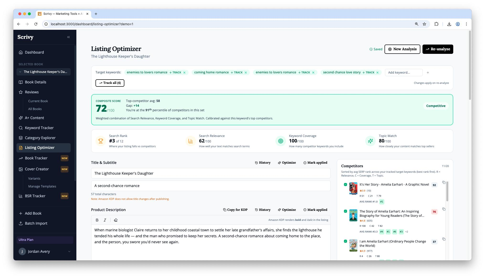

This page shows an abbreviated, illustrative example of what a Book Discoverability Intelligence report looks like. The book, author, and all findings below are entirely fictional and created solely to demonstrate the structure and tone of our analysis.
When you commission a Book Discoverability Intelligence analysis, you receive a detailed written report that examines how your book appears in online retail environments from a reader's perspective. The report covers your metadata, description, categories, cover presentation, competitive positioning, and author presence.
The sample below is a condensed excerpt from a fictional report. It is not a real analysis of a real book. The purpose is to give you a sense of the structure, depth, and tone you can expect from an actual engagement. A full report is considerably more detailed and specific to your book's unique situation.
Everything in the sample report below is illustrative. The book title, author name, genre, and all findings are fictional. They do not represent any real author, book, or analysis. No real book is being evaluated or criticised on this page.
The sample is intended to show the format and approach of our reporting, not to demonstrate specific outcomes or results. Your actual report would be based entirely on the observable realities of your own book's retail presence.

The following is a condensed extract from a fictional discoverability report. All details are invented for demonstration purposes.
Prepared for: [Fictional Author Name] | Book: The Garden at the Edge of Rain (Illustrative Title) | Genre: Contemporary Fiction | Date: [Illustrative Date]
The Garden at the Edge of Rain is a well-presented contemporary fiction novel with a professionally designed cover and a clearly written description. However, our analysis identified several areas where the book's retail presence may be limiting its visibility to the readers most likely to enjoy it.
The book currently appears in two broad fiction categories on its primary retail platform, both of which are highly competitive and dominated by established authors with extensive review histories. This positioning means the book is competing for visibility against titles with significantly greater algorithmic momentum, which may reduce its chances of appearing in organic browse and recommendation results.
Overall, the book's retail page communicates quality and professionalism. The primary discoverability challenge is not presentation but positioning: the signals that retailers use to match books with readers appear to be misaligned with the specific subgenre and reader expectations that this book is best suited to serve.
Concern Title and subtitle: The title is evocative and memorable, which is a strength for reader recall. However, it does not contain any genre-signalling keywords that would help retail algorithms associate the book with contemporary fiction, women's fiction, or literary fiction search queries. The book does not currently have a subtitle, which represents a missed opportunity to add discoverable context without altering the title itself.
Opportunity Book description: The description is well-written and emotionally engaging. It effectively communicates the tone and themes of the novel. However, the first two lines, which are the most critical for search visibility and browse conversion, focus on setting rather than character or conflict. Readers browsing in the contemporary fiction category typically respond more strongly to descriptions that foreground emotional stakes and relational dynamics in the opening lines.
Note Categories: The book is currently listed in "Literary Fiction" and "General Contemporary Fiction." Both categories are accurate but extremely broad. Our analysis suggests that more specific subcategory placements, such as "Family Life Fiction" or "Small Town and Rural Fiction," may offer better visibility opportunities by reducing direct competition with high-volume titles.
We examined the retail presence of twelve comparable contemporary fiction titles published within a similar timeframe and targeting a similar readership. The following patterns emerged:
By comparison, The Garden at the Edge of Rain is positioned more broadly and with fewer genre-specific signals than most of its direct competitors. This does not reflect a deficiency in the book itself, but it may explain why the book is not surfacing as frequently in targeted searches and browse paths.
The following are the most significant discoverability factors identified during this analysis, listed in order of likely impact:
Recommendation 1: Refine category placements. We recommend moving the book from its current broad categories into more specific subcategories that better reflect its themes and target readership. This change can typically be made through the retailer's dashboard or by contacting publisher support. The specific subcategories we recommend, along with the reasoning for each, are detailed in the full report.
Recommendation 2: Add a descriptive subtitle. A subtitle such as "A Contemporary Novel of Family, Loss, and Renewal" would introduce genre-specific keywords into the book's metadata without altering the existing title. This can improve the book's relevance for targeted search queries while preserving the evocative quality of the original title.
Recommendation 3: Restructure the description opening. We recommend rewriting the first two to three sentences of the book description to lead with the protagonist's emotional situation rather than the physical setting. A revised draft is included in the appendix of the full report for your consideration.
[End of illustrative excerpt. A full report would include additional sections covering search behaviour testing, author presence review, visual presentation analysis, and a complete set of recommendations with implementation guidance.]
The sample above shows a small portion of what a complete Book Discoverability Intelligence report contains. A full engagement covers significantly more ground, including:
Every report is tailored to the individual book. The structure, findings, and recommendations you receive will reflect the specific realities of your book's retail presence, not a template applied across multiple clients.
To learn more about the full scope of this service, visit our Book Discoverability Intelligence page.
Before you consider commissioning an analysis, we want to reiterate a few important points about what our reports can and cannot do:
If you would like to understand why your book is not reaching the readers it deserves, we would like to hear from you. Send us a brief description of your book, your genre, and the challenges you are facing. We will respond with an honest assessment of whether a discoverability analysis is the right next step for you.
Enquire About an AnalysisYou can also email us directly at MarvellousLiteraryIntelligence@gmail.com